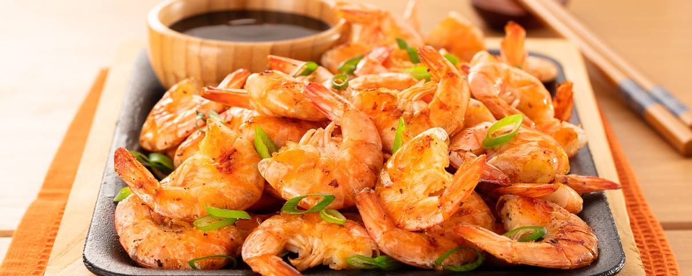

How to Make Shrimp
Ingredients
- 6 tablespoons unsalted butter, softened
- ¼ cup olive oil
- 1 tablespoon minced garlic
- 1 tablespoon minced shallots
- 2 tablespoons minced fresh chives
- salt and freshly ground black pepper to taste
- ½ teaspoon paprika
- 2 pounds large shrimp - peeled and deveined
Step-By-Step
- Preheat grill for high heat.
- In a large bowl, mix together softened butter, olive oil, garlic, shallots, chives, salt, pepper, and paprika; add the shrimp, and toss to coat.
- Lightly oil grill grate. Cook the shrimp as close to the flame as possible for 2 to 3 minutes per side, or until opaque.
CREDIT: https://www.allrecipes.com/recipe/16679/garlicky-appetizer-shrimp-scampi/